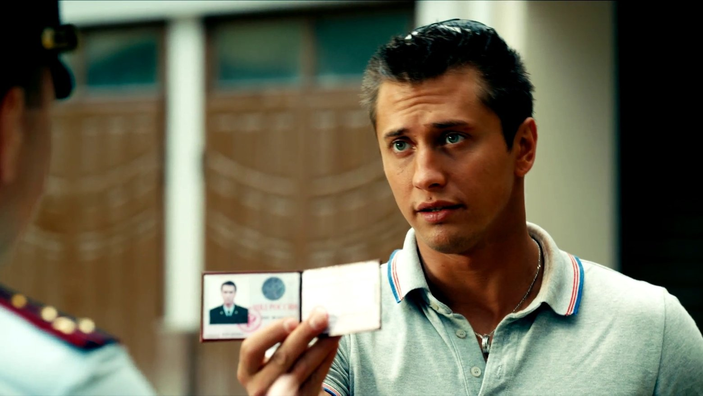
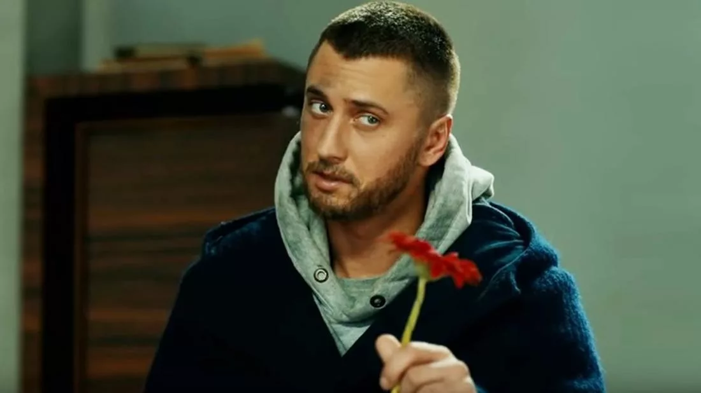
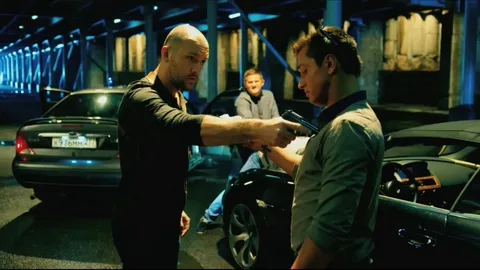
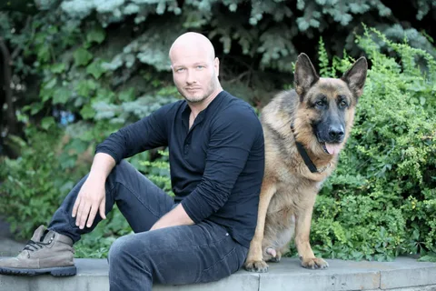
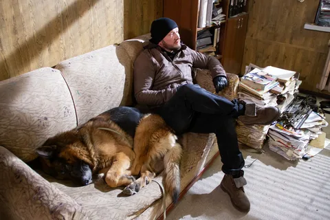
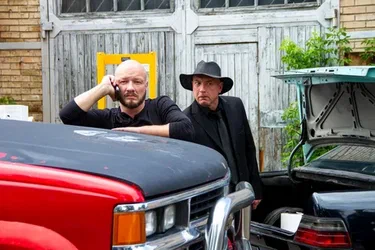
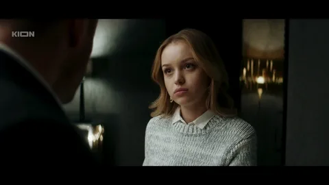
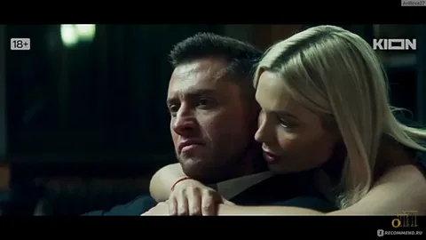
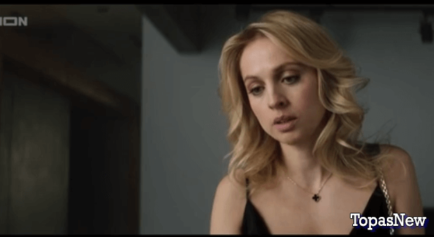

Мои любимые фильмы
Мажор
Краткое содержание фильма
Проходит девять лет со дня перестрелки, унёсшей жизнь Вики Родионовой и искалечившей судьбу Кати. Игорь Соколовский уходит из органов и становится бизнес-партнером Аркадия Игнатьева. В этом статусе Мажор, как и раньше, ныряет в пучину ночных клубов и разгульных вечеринок, пока не узнает шокирующую новость: у него есть 9-летняя дочь по имени Соня.
Кадры из фильма
  О фильме
| Год | 2014 |
| Жанр | Драма, преступление |
| Страна | Россия |
| Режиссёр | Константин Статский |
Пёс
Краткое содержание фильма
Пес» — это остросюжетный детективный сериал о сотруднике полиции Максиме Максимове. Оставшись без любимой женщины, семьи и близких друзей, Максимов уходит на «дно» жизни, начиная пить. От беспробудного алкоголизма его спасает немецкая овчарка, которую он случайно находит на месте преступления. Дав найденышу непритязательную кличку Пес, Максимов выхаживает собаку и привязывается к ней.
Кадры из фильма
  О фильме
| Год | 2015 |
| Жанр | Детектив |
| Страна | Украина |
| Режиссёр | Николай Каптан |
Жизнь по вызову
Краткое содержание фильма
«Жизнь по вызову» — драматический сериал Сарика Андреасяна о мире элитного эскорта. Это история о владельце эскорт-агентства, который пытается сохранить на плаву бизнес и при этом не потерять свои моральные принципы.
Кадры из фильма
  О фильме
| Год | 2022 |
| Жанр | Драма |
| Страна | Россия |
| Режиссёр | Сарик Андреасян |